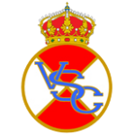
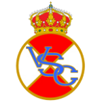

Real Club Celta de Vigo
Que é?
O Real Club Celta de Vigo foi un club nado o día 23 de agosto de 1923, despois de que tanto o Real Vigo Sporting Club coma o Club Fortuna de Vigo decidisen unirse para crear así un clube que puidese competir a nivel nacional e internacional.
 

Actualmente milita, dende o ano 2011, na máxima categoría do fútbol español sendo o único equipo galego nela actualmente.